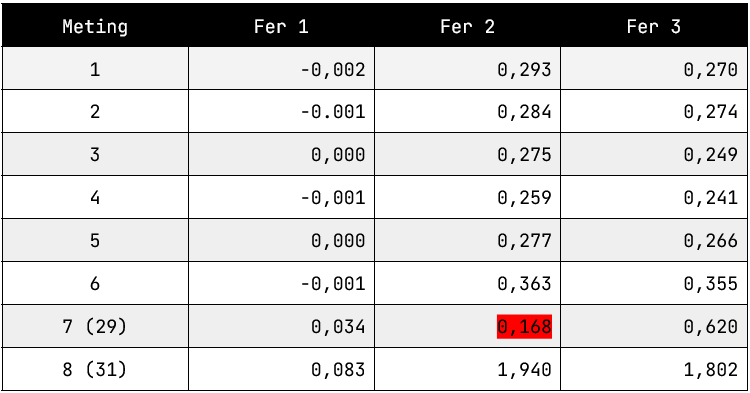
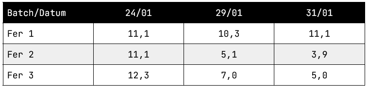
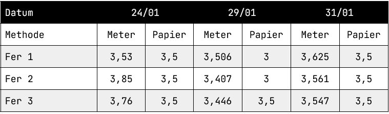
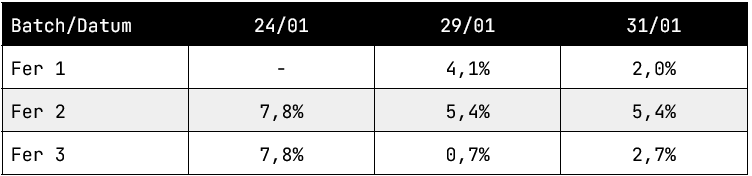
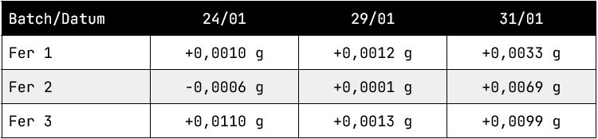
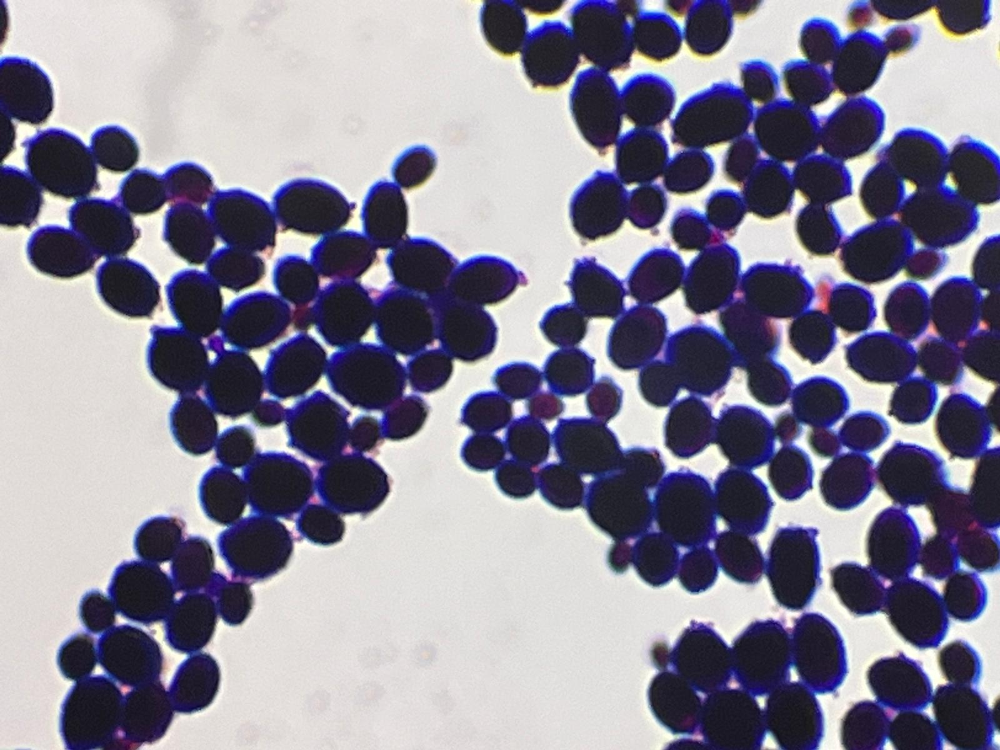
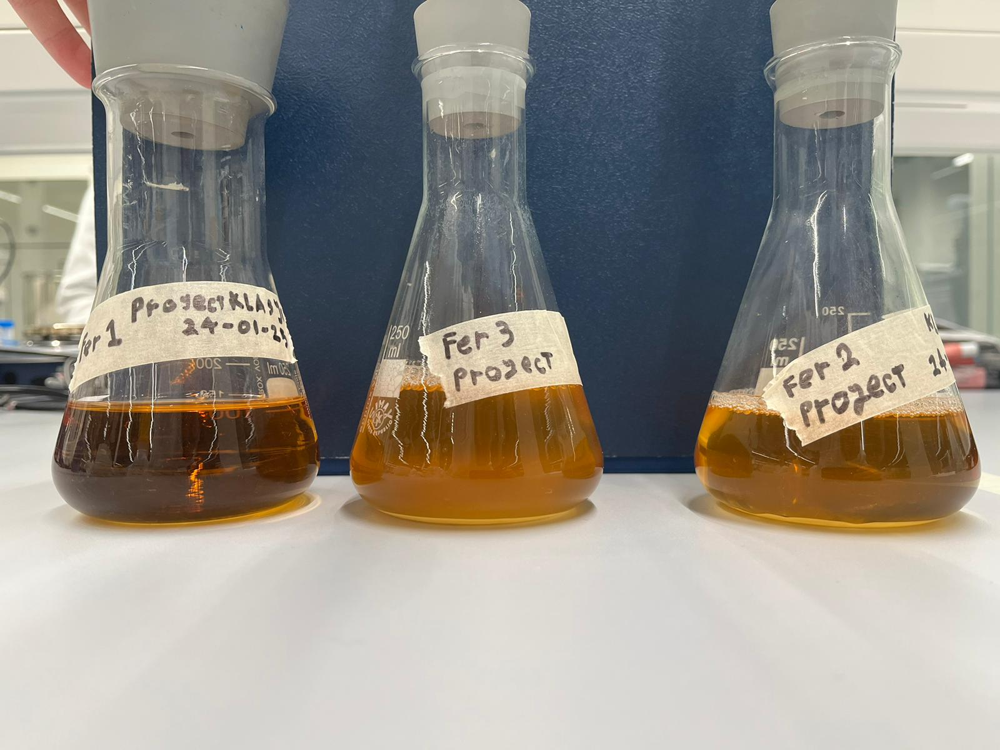

Onderzoek Resultaten
OD600 Metingen

Het rood gekleurde getal is een uitschieter van wegen een fout tijdens het meten. De eerste zes metingen vinden plaats op 1 dag (24/01), daarna staat de datum van de metingen achter het nummer. Hier onder zijn de resultaten verwerkt in een grafiek. De berekende formule is: N(OD600) = 270 * 1,31150559^t(dagen)

Glucose Metingen

Zoals te zien is neemt het suikergehalte af in de batches met gist zoals verwacht.
pH Metingen

De metingen geven aan dat het pH erg stabiel blijft. Dit kan duiden op dat er geen/weinig melkzuur ontstaat door fermentatie, wat gewenst is.
Alcohol Metingen

Deze data punten beschouwen wij als zeer onbetrouwbaar, omdat ze niet overeen komen met de andere metingen. Daarnaast zijn de resultaten erg onlogisch. Voor het geval u toch benieuwd bent, is hier de (onbetrouwbare)formule om het alcohol percentage te berekenen: N(Alcohol%) = 1 * 1,27^t(dagen)
Biomassa Gist

Er blijkt elke week een kleine toename te zijn in de biomassa van de gisten. Dit komt overeen met de OD600 metingen, en in combinatie met de microscoop foto's kunnen wij concluderen dat de biomassa en OD600 inderdaad afkomstig zijn van gist.
Foto's Microscoop Aangetroffen Organismen

Saccharomyces Cerevisiae

Streptococcus Pneumoniae
Opzet Experiment
